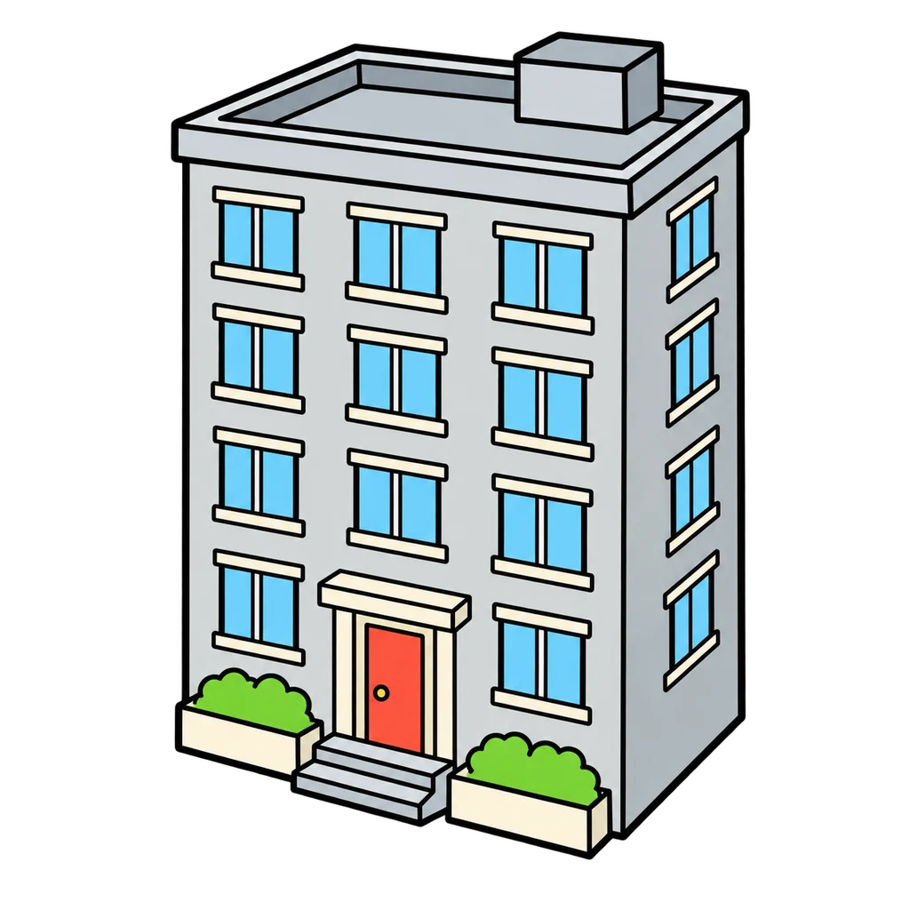
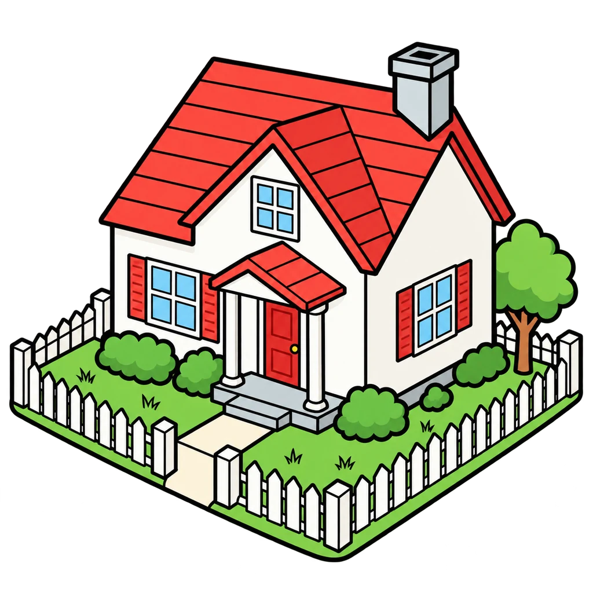
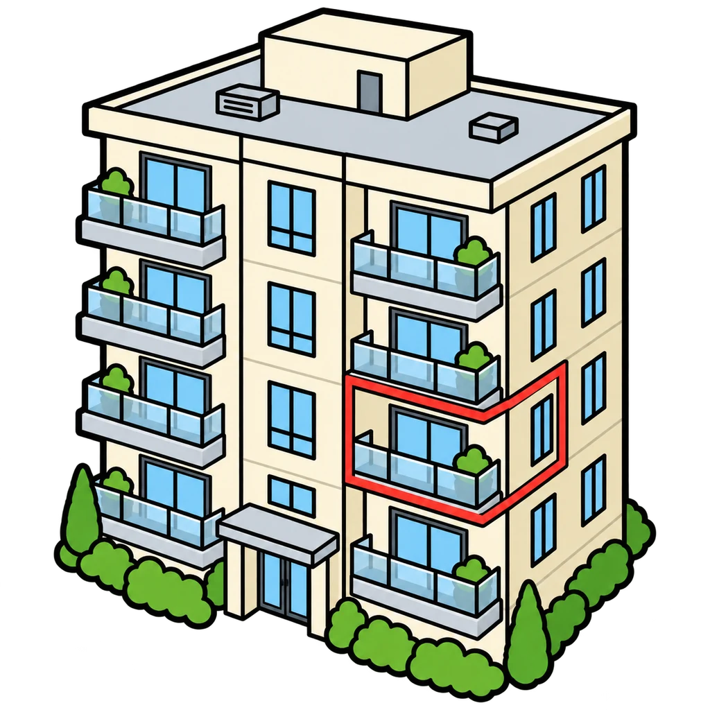
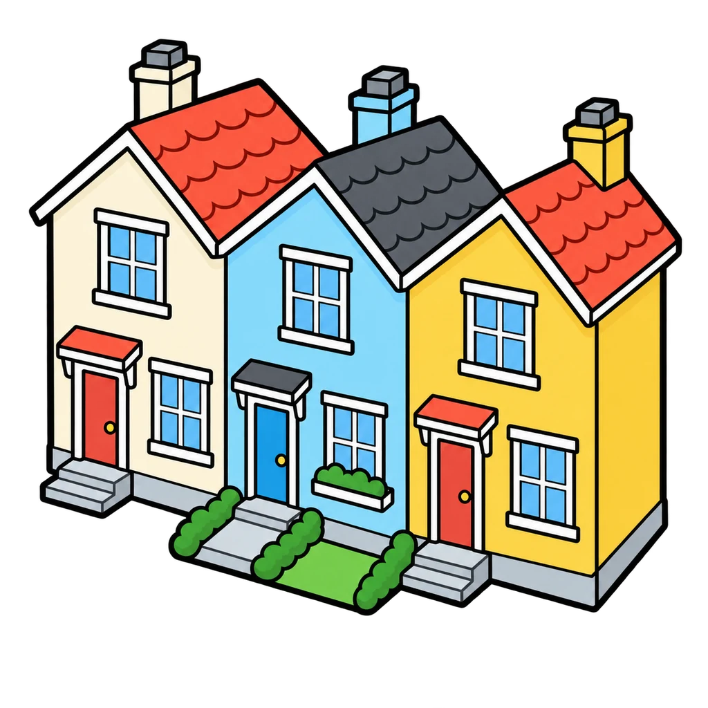
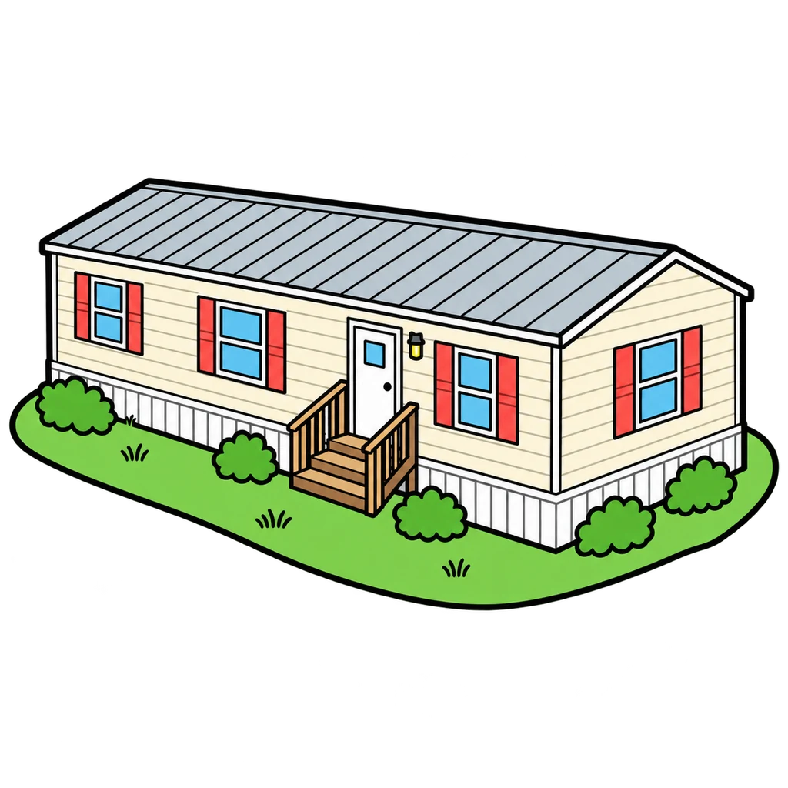
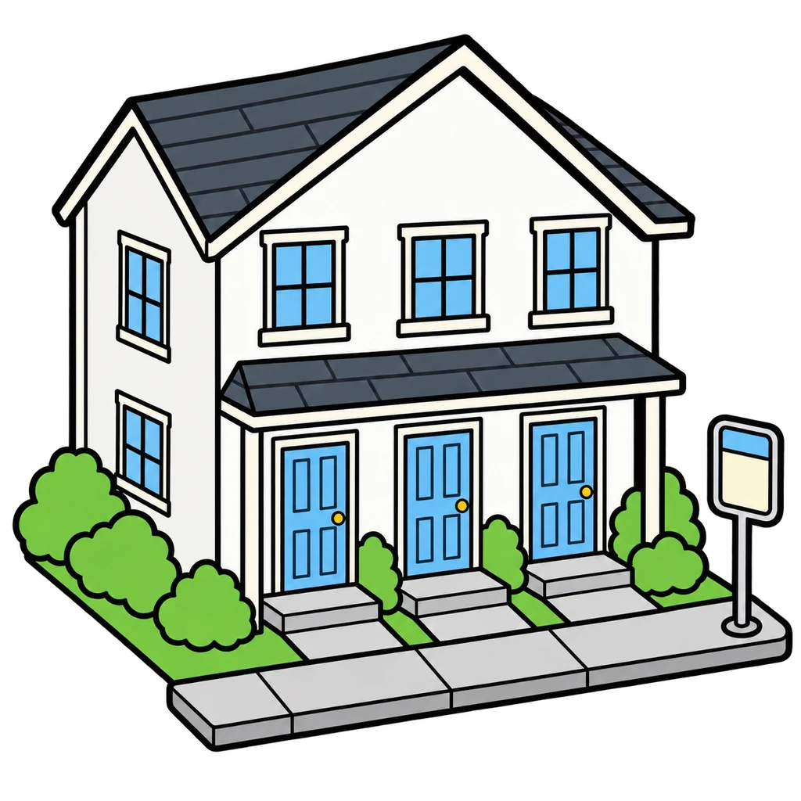

Teacher note
Reviews Lesson 4.1. Reviews Lesson 4.1: the seven jobs of a home and the six housing types with rent, own, or either, plus the words mortgage and universal design. Use it as the do now for Lesson 4.2 or as the two-minute warm up before the Home Safety and Conservation Quiz in Lesson 4.5, where Objectives 1 and 2 of Lesson 4.1 are checked. Two rounds, about two and a half minutes; The end panel lists the seven jobs and the rent versus own line.

Home Match
A clue about one of the seven jobs of a home appears. Tap the job from four choices. Then a housing clue appears, and you tap the housing type or the word it describes.
How to play
Round 1






Done
The ones to study:
Worth knowing by heart:
- A home has seven jobs: shelter, safety, storage, rest, work, play, belonging.
- Your living space is not only your house. School, a job, and the neighborhood are part of it too.
- Neither rent nor own is better. It depends on the family, the money, and how long they will stay.